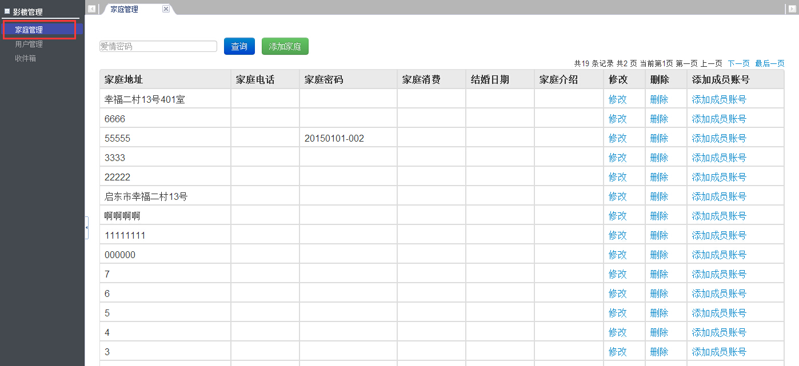
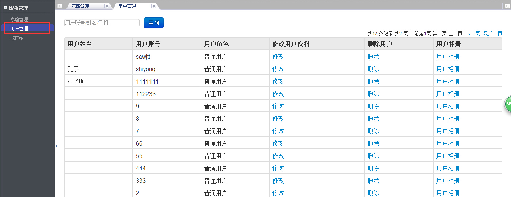
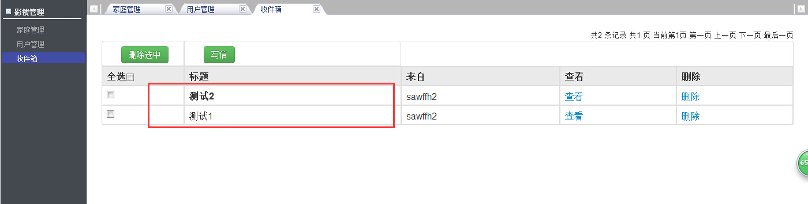
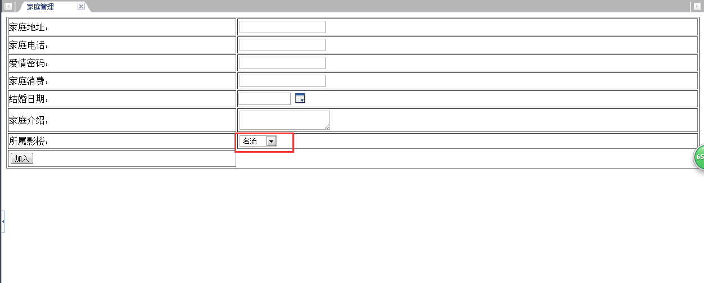
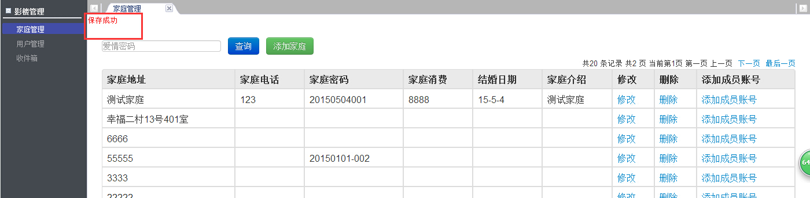
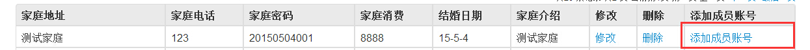
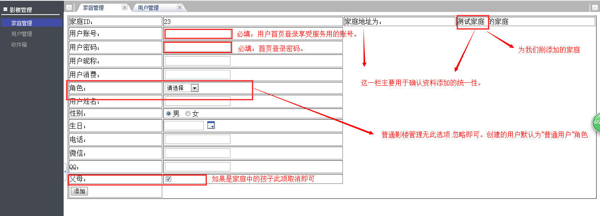
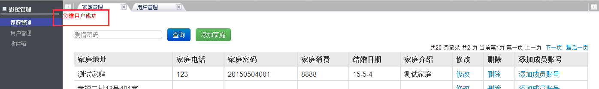
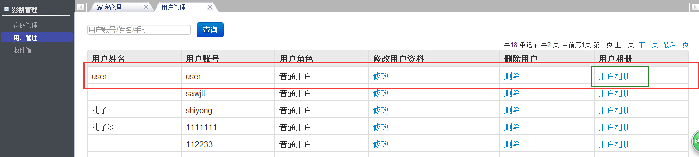

界面介绍

如图点击红色"家庭管理"右侧会出现所有属于贵影楼的家庭资料，以及一些基本操作的按钮。所有家庭是倒序排列的分页表
比如：新加入的一个家庭将显示在第一行，方便操作管理。该页面提供查询家庭（根据提示信息输入相关信息查询）、创建家庭、修改、删除（会提示是否确定删除，后面会细讲）、添加成员账号。

如图点击红色"用户界面"右侧会出现属于贵影楼的用户列表 ，同样是倒序排列也有相应的功能按钮。

邮箱功能为站内信，主要是一些系统消息，和移交提醒，同样你也可以给同行的加盟商写信，然后在每次登陆的时候右上角会有未读邮件的提示，或者点击邮箱未读邮件主题加粗提醒。你也可以在该页面管理你的邮件。
流程讲解
已案例来讲解：现有一对新人来影楼拍摄，首先家庭管理中点击创建家庭转到信息输入界面其中红色框中所属影楼默认为管理员的影楼，请不要随意更改，此功能主要用在移交事项时，如：客户在贵影楼登记的信息，后因
某些原因要去其他加盟商拍摄时，贵影楼只要查询家庭-修改-所属影楼下拉中选中客户选择的其他影楼-保存，即可完成移交工作，而对方影楼所属下的所有管理账号都会收到站内信提醒，来进行家庭的交接工作。点击加入，如果管理账号拥有相应权限则如图：否则提示“无权限操作”并返回家庭列表页面
家庭创建完毕后，为新人各创建各自信息，点击家庭后方的“添加成员账号”转到页面输入信息：管理有相应权限点击添加后同样会提示添加成功，否则提示“无权限操作”。（此处为该家庭添加了一个user账号的用户，每个用户都拥有独立账号。包括孩子）
然后我们点击用户管理即可看到用户列表信息。当用户拍完照片后我们可以为用户选出规定张数（20-30具体为名流规定）的客照上传供用户官网查看，也可关注家印记微信号后朋友圈分享。上传流程：点击“用户相册”-”添加相册“-输入相册信息，入名称 分类等-相册创建
成功后，为相册添加本地多个照片，添加完成后可预览相册图片列表，而用户即可在首页登录后进入会员中心看到自己的相册内容。
到此，一个家庭完成用户维护，用户即可查看相册功能并修改一些自己的资料。